- This page is about the mechanic and systems central Europe revolves around, for the country which is formed by enacting the "Renovatio Imperii" reform see Holy Roman Empire (country).
Please help with verifying or updating older sections of this article.
At least some were last verified for version 1.29.
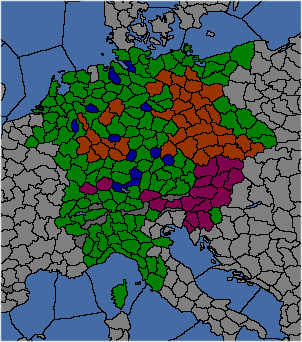
The HRE in 1444. The emperor is in purple. Electors are orange. Free cities are blue. Dark green are Imperial provinces, owned by HRE member-states or otherwise.
The Holy Roman Empire (HRE) is a unique political structure in the game, made up of numerous variously-sized states of the Germanic region and northern Italian Peninsula in Europe. Members are considered 'Princely states' and their heads are 'Princes'. From these Princes, up to seven are Prince-Electors, who vote on which country head will be the next Holy Roman Emperor upon the death of the previous one. The Holy Roman Emperor has various powers at his disposal and a great deal of responsibility to maintaining and protecting the Imperial territorial, religious, and cultural status quo. The Emperor can appoint up to twelve Free Imperial Cities which are OPMs, cannot be electors, and give the emperor more authority in exchange for trading bonuses (for example, see Ulm).
Historically, the Empire existed from the 10th to the 19th centuries, and had up to 300 members at some points, many of which were so small (e.g. the grounds of an imperial abbey) that they are not represented in EU4. The first Holy Roman Emperor, Charlemagne, was crowned "Emperor of the Romans" in Rome by the Pope in the year 800, but it wasn't until 962 that the HRE as a united polity came into being. It considered itself to be the spiritual successor state to the Roman Empire, even though throughout the majority of its existence it never directly controlled Papal Rome (and also despite, up to 1453, the continued existence of the 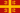
Eastern Roman Empire and until the late 15th century of various Byzantine holdout states such as Trebizond, Theodoro, etc.). It experienced high amounts of decentralization towards the end of the Middle Ages, which is represented in-game by the special HRE mechanics (see below). The balance of power between the various Princes, Electors and the Emperor was always in flux, and imperial unity was further weakened by the Reformation. From the 15th century on, except for a handful of years under the house of Wittelsbach (during the early years of the reign of Archduchess Maria Theresa) the Emperor was from the House of Habsburg or Habsburg-Lorraine, the rulers of  Austria and many other European nations.
Austria and many other European nations.
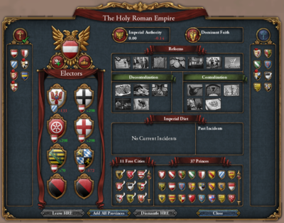
The Holy Roman Empire interface, showing
Austria as the Emperor, six electors (5 voting for Austria), eleven Free Cities, and 37 other princes. Religious leagues are forming: on the left, the Catholic League led by the Emperor (Austria); and on the right, the Protestant League, here led by Brandenburg. The green tick indicates that the player is a member of the Catholic League.
The Holy Roman Empire interface is a small shield (with a picture of an imperial eagle) on the bottom of the screen (only visible as long as the HRE exists). Under the icon is a number which shows the authority of the current reigning Emperor.
Within the interface are a number of shields of various sizes representing members of the HRE. Each of them can be clicked on, which will bring up the diplomatic interface to examine and interact with that nation.
- Religious state: In the top right of the interface is an icon indicating the current state of religious law within the Empire. At the start of the game, this is a gold cross indicating that the Catholic faith is official. When the religious league forms, it changes to an icon indicating a "state of Religious War"; when this state ends, it changes again, possibly back to Catholic, to Protestant, to Reformed, or to an icon reflecting that "a treaty of permanent religious peace has been established".
- Current Emperor: The large shield in the upper left corner shows the arms of the country who is currently the Emperor.
- Imperial Actions: Hovering over the dove icon to the left of the Emperor's shield shows what special actions are available to the Emperor.
- Benefits: Hovering over the icon of the imperial crown to the right of the Emperor's shield shows the current benefits granted to the Emperor and to princes.
- Imperial Authority: The white number in at the top of the interface shows the current imperial authority to two decimal places. Hovering over it shows a list of factors that can affect it. The red or green number below it shows how much imperial authority changes each month, and its tooltip shows the factors that currently affect it.
- Reforms: In the center is a list of possible imperial reforms (three lists if the
 Emperor expansion is enabled); hovering over them reveals their tooltips, which show the reforms' respective benefits for princes and the emperor. The main reforms must be passed in order from left to right and from top to bottom (the decentralization and centralization reforms becoming available after “Perpetual Diet” is passed). Once passed, the reform's icon gains a gold border. The reform's icon has a tooltip showing which princes are in favour of or against the next reform, and it can be clicked by the Emperor to pass them. Members other than the emperor have a small box in the bottom right corner each reform that can be ticked to vote in favour, or unticked to vote against.
Emperor expansion is enabled); hovering over them reveals their tooltips, which show the reforms' respective benefits for princes and the emperor. The main reforms must be passed in order from left to right and from top to bottom (the decentralization and centralization reforms becoming available after “Perpetual Diet” is passed). Once passed, the reform's icon gains a gold border. The reform's icon has a tooltip showing which princes are in favour of or against the next reform, and it can be clicked by the Emperor to pass them. Members other than the emperor have a small box in the bottom right corner each reform that can be ticked to vote in favour, or unticked to vote against.
- Electors: These are the princes that have the power to elect the next Emperor. There are usually seven of them, but there may be fewer if some have been annexed or left the Empire, and the reform “Embrace Rechenschaft Measures” unlocks an eighth. Underneath each of their shields is a smaller shield, representing that elector's current choice of successor to the Imperial crown. They can vote for themselves if eligible, or for other eligible nations. If the player is an elector, they get a "Cast Vote" button at the top of this box that lets them change their vote. Next to it is a number which represents that elector's current support of the player's own ruler as successor. This will range from a positive number, which means the elector favors the player's ruler over all others, to a negative number indicating someone else is favoured, to less than −1000 if the player's ruler is ineligible to be Emperor. Hovering over the large shield will display a tooltip showing all the factors that play into the elector's current attitude towards the player and the elector's (next) favourite, as well as their attitude towards the next available imperial reform and a breakdown of factors contributing to it. Hovering over the number shows the scores of the country's top 11 choices for emperor.
- Princes and Imperial Free Cities: At the bottom is a display of all the shields of the current member states of the Empire. This number can shrink or grow over time as member states are conquered or new ones find a home within the Empire's boundaries. Free Cities are listed to the left of the other princes, distinguished by a white banner crossing behind their shields. Hovering over any of these shields shows their current attitude towards the next reform and a breakdown of factors contributing to it.
- Join/Leave HRE: At the bottom left is a button for those who have had enough of the Emperor's meddling in their lives. Selecting this button will remove all of its provinces from the Empire, which also ends the country's status as a prince of the Empire. If the country is not currently a member, this is replaced with a button that does the reverse (adding the country and all its provinces to the empire), provided the conditions for this are met.
- Add All Provinces: If the player is a prince and owns provinces that aren't currently part of the empire, they can click this button to add them all at once. Individual provinces can still be added from the province window.
- Dismantle HRE: This button allows the player to dismantle the Holy Roman Empire and disable the HRE mechanics permanently, if certain conditions are met.
- Religious leagues: During the Age of Reformation, it is likely that a Protestant country will form the Protestant League in preparation for religious war against the Emperor, who forms his own Catholic League. The members of these leagues are shown on panels to the left and right (Catholic and Protestant respectively). Above these panels is a button which a non-member can press to join the league (not available to the Emperor, who always leads the Catholic League).
- Imperial Diet (only with Emperor): Under the imperial reforms is the Imperial Diet. Here, past and current imperial incidents and their outcomes are displayed. During an incident, the current incidents section displays multiple buttons for the incident's outcome. Clicking on a button supports that outcome, and hovering over them displays which princes support which outcomes, including which option the Emperor currently favors.
The Emperor is the leader of the Holy Roman Empire, tasked with defending and maintaining the sovereignty of member states.
Friedrich III von Habsburg of Austria starts the game, in 1444, as Emperor.
- See also: #Electors
Emperors, once chosen, serve for life. However, if the emperor becomes ineligible, or is annexed so his/her nation ceases to exist, a new emperor will be elected. On the death or disqualification of the current emperor, the electors choose a replacement from within the Christian world, with the exact eligible denominations determined by the outcome of religious league wars.
An emperor can only be selected from candidates that are:
- Male (unless the Pragmatic Sanction decision has been enacted by an emperor with a female heir)
- The accepted imperial religion. If the Peace of Westphalia event happens, any Christian may be chosen (although a −50 "Heretic Nation" penalty goes toward the nation's score on the electors' opinion, not to mention the relations hit), including Orthodox and Coptic nations.
- Independent (i.e. not subjects)
- Leading a country with the capital in the same continent as the current emperor's capital
- A monarchy
- Has not enacted one of the following government reforms: Revolutionary Empire, States General, Stadhouder Monarchy nor Livonian States General[1]
For the current emperor, their heir must fulfill the conditions instead. If there is no eligible candidate, most often due to the outcome of the religious league war and all of the rulers of that religion being female, then no emperor is elected and the empire is automatically dismantled.
Notably, being a member of the Empire is not a requirement, though electors will usually prefer members (−50 reasons, and cannot get +25 reasons as a "Large Nation in the Empire").
Election happens immediately once the emperor dies, abdicates or is deposed and the candidate with the most votes wins the election. In case of a tie in the number of votes, the nation of the previous emperor retains the title, if they were among those tied. Otherwise, the tied candidate whose country has the highest prestige wins the election.
An emperor cannot lose the election for emperorship while in the midst of a league war.
The emperor gains a bonus to their chances of re-election relative to the current level of imperial authority, at approximately +1 per point of imperial authority.
The Emperor gets the following bonuses:[2]
|
|
+10% |
Spy network construction
|
|
|
+1% |
Possible advisors
|
|
|
+1% |
Diplomatic relations
|
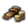
|
+1% |
Leader(s) without upkeep
|
|
|
+1% |
Yearly prestige
|
- Government rank: Princes cannot rise above duchy rank unless they are electors, the emperor or have a reform with a fixed rank. The emperor is always empire-tier. Princes which have a fixed rank always keep the rank unless they are emperor. Electors may become kingdoms but not empires. The HRE electors Bohemia, Trier,
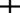
Cologne and Mainz are the only kingdoms in the HRE in 1444.
- On becoming Emperor one's government rank changes to empire (adding +400 governing capacity). However, on losing the emperorship one reverts to being a duchy (if an HRE prince) or at most a kingdom (if an HRE elector) based on one's development.
Additionally, for each member state of the HRE:[3]
Additionally, for each free city in the HRE:[4]

|
+2 |
Tax income
|
|
|
+0.5 |
Land force limit
|
|
|
+1000 |
Manpower increase
|
Additionally, the Emperor may core any province within the Empire, even if it's out of coring range or inaccessible.
If a non-member is elected emperor and their capital has a land connection to an HRE province then all their European provinces which have a land connection to the capital can be added to the HRE (using the join HRE button), making them an HRE member.
The Emperor has the following powers and duties:
Available from the Holy Roman Empire interface, the Emperor can enact an Imperial reform once he has at least 50 imperial authority, and a majority of princes support the reform. The Emperor can see how many members of the Imperial Diet support the reform by hovering over the reform button, and why they support or oppose it, by hovering over the shields of each imperial prince. A prince's decision to support a reform is largely based on their opinion of the emperor, the amount of imperial authority and the emperor's diplomatic reputation.
The Emperor receives a call to arms when outside powers declare war on a prince of the empire, or members declare war on each other without a casus belli. Unlike a regular call to arms this does not usually have an effect on prestige, but does affect imperial authority. If the emperor decides to refuse this call, imperial authority drops by −10. Regardless of the outcome, answering this call to arms gives the emperor a +50 relations boost with regular members of the Empire, and +100 with the electors. The opinion of the nation that was under attack will increase by +10 because of the honored alliance relation boost.
Once the first imperial reform has been passed, the Emperor gains a casus belli against all non-HRE nations that control any HRE territory, such as Burgundy or Venice at the start of the game. HRE territory owned by non-members is shown with yellow diagonal lines in the Imperial map mode. If an outside power conquers the target province, the emperor gains a claim on the province.
The Emperor gains a casus belli against nations that annexed a member state, with the goal to liberate the said prince. Succeeding in liberating the prince will result in an imperial authority bonus. The casus belli is automatically given upon the annexation, and expires in 60 months (5 years).
Diplomatic Actions of the Emperor[edit | edit source]
The Emperor has the following additional diplomatic actions:
This action gives the Emperor a +50 relationship modifier with another nation within the Empire at the expense of −1 Imperial Authority. This relationship bonus will disappear if the country stops being emperor.
Grant Free City status to nations in the HRE that only own one province. Free Cities get a special republican government, a bonus to tax income and will always be able to call in the Emperor when they are attacked, even in internal HRE wars. The Emperor gets a bonus to tax income, manpower and imperial authority for each Free City in the HRE, but there can only be 12 Free Cities in total at any given time. A Free City that gains a second province or leaves the HRE will lose their Free City status. Free Cities cannot be Electors. Monarchies get a −50 penalty to accepting and theocracies get −100, so getting one-province republics released may be necessary to create more free cities. A nation that feels Threatened by the Emperor will have a +20 modifier to becoming a Free City, so that they can have guaranteed Imperial protection. Friendly status or being allied gives +10, relations give up to +20 and each point of diplomatic reputation give +3.
Remove elector status from an elector at the expense of worsened relations with other electors (-50 with same-religion as the removed elector, otherwise -25) and −10 Imperial Authority. This action is not available unless the HRE has an official religion and the elector is considered heretic.
If there are fewer than seven electors in the Empire, the Emperor can appoint a new Elector in the diplomacy screen to any independent nation inside the Empire. Granting an electorate gives a +50 relations boost with the new elector. The emperor cannot make Free Cities, Subject Nations, or himself electors. If the HRE has an official faith, the country must follow that faith.
This is a diplomatic action which allows the Emperor to force his/her state religion on other nations within the empire that follow heretical denominations. The acceptance of the request depends on the target nation's opinion of and attitude towards the Emperor, the Emperor's diplomatic reputation and prestige, the target nation's number of provinces and whether the target is an Elector. If the target is an elector, free city or Defender of the Faith, it counts for a −1000 points reduction on the likelihood of acceptance, effectively rendering peaceful conversion impossible. If the target accepts the request, they convert to the Emperor's state religion and one random province becomes converted automatically. The Emperor suffers a relations hit (−10 which is cumulative up to −100) with other Princes with the heretic religions of all denominations. If the target refuses to convert peacefully, the Emperor suffers a prestige hit and gains a casus belli against the target. It can only be demanded after a religion is set in the HRE, meaning that if the Peace of Westphalia is signed, this option will be permanently locked, but will be available after 1635 if the League Wars are never triggered for example (see Religious Leagues).
Demanding religious unity, whatever the answer, costs 1 point of Imperial Authority.
The Emperor can demand another nation, member or not, to return unlawfully held imperial territory to the Emperor, refusal of which gives the Emperor an Imperial Liberation casus belli and gives all member states a relations penalty with the unlawful land's holder. The territory is considered unlawful if the owner does not have a core on it. Denying the request will also result in higher unrest, lower tax and manpower and a negative monthly autonomy change in the recently conquered province. If target country refuse the Demand, Holy Roman Empire loses −1 Imperial Authority. Demanding causes a −100 relation penalty with the target, so it is probably worth it to let an Elector keep its spoil of war instead. If the same province is taken twice by different or same nations the emperor takes ownership of that said province.
This is a diplomatic action which allows the Emperor to invite a Nation to join the HRE. The country is valid to be asked, if they fulfil the "Adding provinces to the HRE" conditions (see below). Nations have a base acceptance of −100 which can be modified by:
| Reasons |
Factor
|
| −50 |
Kingdom rank
|
| −100 |
Empire rank
|
| −150 |
Is The Papal State
|
| −80 |
Heretic or heathen relative to the official faith of the HRE
|
| −30 |
Protective attitude
|
| −50 |
Rebellious attitude
|
| −50 |
Disloyal attitude
|
| −80 |
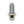 Rival attitude
|
| −130 |
Hostile attitude
|
| −180 |
Domineering attitude
|
| −1000 |
Outraged attitude
|
| −1000 |
Already in the empire
|
| ±1 |
Per 10 opinion of Emperor
|
| +50 |
Ally attitude
|
| +50 |
Defensive attitude
|
| +50 |
Friendly attitude
|
| +50 |
Loyal attitude
|
| +30 |
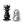 Threatened attitude
|
| +100 |
Overlord is the Emperor
|
| +? |
Having a threatening country nearby (exact numbers needed) (see joining the empire)
|
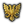
Imperial authority is used to pass reforms within the Empire and perform certain Emperor actions. The Emperor needs at least 50 authority to pass a reform and the support of at least half of the members of the Empire. When a reform is passed, all Imperial Authority is removed (the counter is set to 0). Imperial authority is capped at 100.
Imperial Authority changes as follows:
|
|
Conditions
|
| +10 |
Emperor re-elected (unless the Erbkaisertum reform is passed)[5]
|
| +0.10 |
- Per development, when a nation chooses to join the Empire by itself
- Per province development that is added to the Empire using the
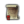 "Expand Empire" casus belli
|
| +0.10, monthly |
Peace internally in the empire (no wars between princes)
|
| +0.05, monthly |
Per tier of the monument Historical Center of Prague, if Prague is owned by the emperor and of the emperor's religion (+0.15 at )
|
| +0.005, monthly |
Per Free City in the Empire (+0.06 with 12 free cities). Increased by:
|
| +0.003, monthly |
Per prince over 25 in the Empire[6]
|
| −0.003, monthly |
For every prince below 25 in the Empire[6]
|
| −0.005, monthly |
Per province owned by an independent non-member or non-sovereign subject of a non-member
|
| −0.01, monthly |
Per heretic or heathen prince in the Empire before the league war or if it has an official religion
|
| −0.005, monthly |
Per heretic or heathen prince in the Empire if religious peace has been proclaimed
|
| −0.1, monthly |
- Per elector who is a vassal[7]
- Per electors below 7 (below 8 if reform Embrace Rechenschaft Measures is enacted)
|
| −0.2 |
Per 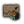 developement, when a member leaves the empire
|
| −1 |
- Enforce Religious Unity diplomatic action
- When Demand Unlawful Territory is refused
- When a province is removed from the Empire
|
| −5 |
Revoke Free City Status
|
| −10 |
- Declining a defensive call to arms as Emperor (from a member being attacked by a foreign nation or any nation attacking a free city)
- When a non-HRE nation annexes a member of the HRE
|
|
|
Traditions
|
Ideas
|
Bonuses
|
Policies
|
| +0.1
|
—
|
- Brandenburg idea 5: Seat of the Old Emperors
- Goslar idea 2: Kaiserpfalz
- Mantuan idea 1: Free Imperial City of Mantua
|
—
|
—
|
Imperial authority growth modifier[edit | edit source]
The imperial authority growth modifier increases the gained imperial authority from all sources:
|
|
Traditions
|
Ideas
|
Bonuses
|
Policies
|
| +10%
|
- Bohemian (upgraded) traditions
- Bohemian traditions
|
- Austrian idea 1: Imperial Ambition
|
—
|
—
|
| +5%
|
—
|
—
|
|
—
|
If the Emperor has a female heir he can, under certain conditions take the decision that in the future women can become empress. This is not needed if Proclaim Erbkaisertum has been passed. Historically, Emperor Charles VI, who had no male heirs, issued it in 1713 to provide for the succession of his daughter Maria Theresa, which nonetheless led to a succession war in 1740 (the War of the Austrian Succession).
Our heir is a woman but the Imperial crown can only pass to a man. It would be intolerable if our dynasty should lose their hold on the crown they worked so hard to acquire due to a mere technicality. Let us use all our influence to ensure our female heir will be considered as our successor when the time comes to elect a new Emperor of the Holy Roman Empire.
| Potential requirements
The country:
- is a member of the Holy Roman Empire.
- has not enacted this decision before.
No female can become emperor.
|
Allow
The country:
No female can become emperor.
|
|
| Effects
The country:
|
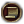
The Pragmatic Sanction
The Pragmatic Sanction, solemnly rendered by Emperor $EMPERORNAME$ on [GetDateText], established the indivisability of his lands and established succession by order of first born child, even to a woman. No doubt $EMPERORNAME$ also plans for his female heir to in time take his seat on the Imperial Throne.
| Trigger conditions
|
Is triggered only by
By the decision ‘Pragmatic Sanction’.
|
Females can become emperor.
|
The Italian Princes must be reined in either through diplomacy or war. We cannot allow Italy to become a shadow kingdom!
Potential requirements
- Is Emperor
- Doesn't have global flag italians_leave_hre
The year is before 1500.
|
Allow
- The Emperor has formally decided to rein in Italy
- All Italian Princes have been reined in.
|
|
Effects
- set country flag shadow_kingdom_early_success
- Every country that has not been reined in may leave the Empire! (gets The Shadow Kingdom event)
|
End the Great Peasants' War
The Great Peasants' War must be brought to an end, with either the peasantry or the nobility emerging as the victor in this conflict. As the peasants enforce their demands or create new republics, they come closer to enforcing their demands. But when a new republic is crushed, the tide turns in favour of the nobility.
| Potential requirements
|
Allow
- Doesn't have any active Imperial incidents
- Peasants' War Progress must be greater than 9 or less than -9.
|
|
Effects
- Imperial incident "The Great Peasants' War begins
|
For too long we have suffered under the tyrant heel of the nobility. Peasants' War Progress is gained when countries become Peasant Republics or when they collapse to Peasant rebels.
| Potential requirements
|
Allow
- Doesn't have any active Imperial incidents
- Peasants' War Progress must be at least 10.
|
|
Effects
- Imperial incident "The Great Peasants' War begins
|
The Electors are the nations that vote for the next Emperor. When there are fewer than seven electors, the Emperor may grant the electorate to another independent nation within the Empire. Electors are incredibly protective of their sovereignty and are unlikely to vote for a nation that has an elector as its vassal. The Emperor may simply revoke the electorate of an elector if they follow a heretical denomination (and can't go to war to do it). Electors may vote for non-members of the HRE too.
The imperial reform Proclaim Erbkaisertum stops further elections, making the Emperorship hereditary, but the electors keep their status. Passing the imperial reform Embrace Rechenschaft Measures allows for an eighth electorships to be granted.
If there are no electors in the empire, hereditary rule is instituted.
These states begin as electors in 1444:
- Bohemia
- Brandenburg
- Cologne
- Mainz
- The Palatinate
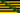
Saxony- Trier
There are several ways for a country to become an elector:
- Inheriting an elector
- If a country gets a personal union over an elector and then inherits the elector, the overlord gets their status (this does not work for non-HRE nations, as the elector is simply removed instead).
- Grant electorate
- The emperor can use the diplomatic action Grant Electorate to make a country an elector if there is a free slot. AI emperors will assign nations they have good relations with, and that are the dominant religion in the empire. They will not assign a nation of a different religion to be an elector. The emperor prefers small princes, as they fear large ones will only vote for themselves and take the Emperorship. They still have this fear even if the large nation is a republic or theocracy, thus making it impossible for them to become emperor. Each province over three the prince owns reduces the likelihood they will be an elector. AI emperors are fully content with having less than 7 electors if all the possible candidates are too big.
- Claim the Electorate peace term
- This peace term is only available in a war which was declared against the emperor with the Claim the Electorate CB which is only available to countries which have an elector as a subject.
- Via events
- The Papal States will become an elector if there is a free slot when they join the HRE with the incident “The Pope and the Emperor”. Thuringia can take the electorate from Saxony with the events The Saxon Electorate. Bavaria can take the electorate from The Palatinate with the mission event Transfer the Palatine Electorate to Bavaria?. Hungary can take the electorate from Bohemia if they join the HRE with the incident “Hungary Wishes to Join the Empire”.
- By decision
Ducats are a powerful tool. Not only in the world of commerce, but also in the world of international politics. It might be possible to purchase the Electorate role from the Emperor.
Potential requirements
- Is not an Elector of the Holy Roman Empire
- Is not the Holy Roman Emperor
- Is part of the Holy Roman Empire
|
Allow
- Is not an Elector of the Holy Roman Empire
- Is not the Holy Roman Emperor
- Any subject:
- Is an Elector of the Holy Roman Empire
- Religion is same as The Holy Roman Emperor
- Has at least
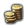 6 000 ducats
- None of:
- None of:
- Is not running a deficit
- None of:
- Is at war with The Holy Roman Emperor
- The Holy Roman Emperor has at least 0 opinion towards this country
- At least one of:
- None of:
- Country flag tried_to_get_elector_role is set
- Has had country flag tried_to_get_elector_role for at least 2 years
|
|
Effects
- Tooltip: “We will offer [Emperor.GetName] 6000 ¤ for transfering the Electorate from our subject to us.”
- Hidden effect:
- Clear country flag tried_to_get_elector_role
- Set country flag tried_to_get_elector_role
- The Holy Roman Emperor
- Trigger country event “[From.GetName]'s Offer for the Electorate”
|
AI decision factors:
As we are tightly connected to the Emperor it might be possible to request the transfer of the Electorate from our subject to us. All we need to do is to ask friendly.
Potential requirements
- Is not an Elector of the Holy Roman Empire
- Is not the Holy Roman Emperor
- Is part of the Holy Roman Empire
|
Allow
- Is not an Elector of the Holy Roman Empire
- Is not the Holy Roman Emperor
- Any subject:
- Is an Elector of the Holy Roman Empire
- Religion is same as The Holy Roman Emperor
- Is allied to The Holy Roman Emperor
- The Holy Roman Emperor has at least +200 opinion towards this country
- The Holy Roman Emperor
- Has at least 80 trust with Our country
- None of:
- Is at war with The Holy Roman Emperor
- At least one of:
- None of:
- Country flag tried_to_get_elector_role is set
- Has had country flag tried_to_get_elector_role for at least 2 years
|
|
Effects
- Tooltip: “We will ask [Emperor.GetName] to transfer the Electorate from our subject to us.”
- Hidden effect:
- Clear country flag tried_to_get_elector_role
- Set country flag tried_to_get_elector_role
- The Holy Roman Emperor
- Trigger country event “[From.GetName]'s Request for the Electorate”
|
AI decision factors:
As we are the Emperor of the Holy Roman Empire it is our given right to take and distribute the right to elect the next Emperor as it pleases us. As one of our subjects has this right it is more than justified to transfer the electorate to us.
Potential requirements
- Is not an Elector of the Holy Roman Empire
- Is the Holy Roman Emperor
|
Allow
- Is part of the Holy Roman Empire
- Is not an Elector of the Holy Roman Empire
- Is the Holy Roman Emperor
- Any subject:
- Is an Elector of the Holy Roman Empire
- Stability is at least +1
- Imperial Authority is at least 5
|
|
Effects
- Lose 5 imperial authority
- One random subject country:
- Limited to:
- Is an Elector of the Holy Roman Empire
- The country is removed as an elector of the HRE
- The game displays a tooltip block without any actual effects in this place
- Hidden effect:
- Trigger country event “[From.GetName] usurped our Electorate!”
- The country is made an elector of the HRE
|
AI decision factors:
AI electors weight candidates according to the following criteria (non-exhaustive list), although an AI elector with the backing of another elector will vote for itself regardless, as will an elector with a "strategic interest [in] becoming emperor" (although the conditions for this are not explicitly stated).
- + current opinion, from −200 to +200.
- +1 for each point of legitimacy over 50 and −1 for each point of legitimacy below 50
- + Prestige / 4, from −25 to +25
- + Imperial Authority, for the current emperor.
- +30 for an alliance with the candidate.
- +10 for a royal marriage with the candidate.
- −25, if a one-province minor.
- −25, if under 50 development (“Too small nation”).
- +25, if above 100, but below 200 development and an HRE member (“Large Nation in the Empire”).
- +50, if equal or above 200 development and an HRE member (“Large Nation in the Empire”).
- +5 for same culture group.
- −50 for heretic religion (i.e., different branch of Christianity).
- +50 for subject electors, towards their overlord.
- −50 for independent electors towards a candidate with electoral subjects whether vassals or personal unions (stacks).
- −50 for non-HRE states.
- +200 for being the leader of a religious league. (The leader of the Protestant League will be Protestant and thus ineligible.)
- −200 for being a member of the opposing religious league.
- +10 per point of positive diplomatic reputation.
- −5 per point of negative diplomatic reputation.
- −200 if at war with the candidate. (NB: this is a severe penalty, but not automatically disqualifying).
- −1000 if ineligible (non-monarchy, having the States General reform, female candidate before Pragmatic Sanction, not HRE religion or not independent, in a regency or interregnum, or the Emperor with no eligible heir).
Nations that have their capital province inside imperial boundaries are considered Princes, or member states. These are the non-electoral states that begin the campaign in 1444 as part of the Empire:
Of these, Holstein is a vassal of a non-member (Denmark), Brabant and Holland are in a personal union under a non-member (Burgundy), and Lorraine is in a personal union under a non-member (Provence).
Italian princes (marked in bold) will leave should the Emperor choose to let go of Italy during the "Shadow Kingdom" imperial incident.
Adding provinces to the HRE[edit | edit source]
Members of the HRE can add their provinces to the HRE via a button in the bottom left of the province interface, provided that the province borders another province that already is part of the HRE. Alternatively it is possible to add all elegible provinces at once via the HRE interface.
Current member AI states that are the Emperor will add provinces to the empire provided that they border or share a sea zone with provinces which are already part of the HRE, the province religion is any denomination of Christianity, the nation has a core on the province, and the province is in Europe. Provinces connected with a water crossing can be added to the empire, as well as isolated islands provided they share a sea zone with a province already in the empire.
Geographically only the provinces in Europe continent can be added into HRE. Be aware that regions do not correlate to continents 100% − e.g. most of Anatolia region belongs to Europe but Kurdistan area belongs to Asia. Similarly with Caucasus and Armenia. That means that Armenia and Kurdistan cannot be added into HRE.
Adding provinces to the HRE has no benefits in itself.
Removing provinces from the HRE[edit | edit source]
Non-members may remove owned, and cored, imperial territory at will if at peace by clicking on the eagle icon in the province window. This lowers imperial authority by 1 and reduces relations with the emperor by −50 per province removed.
Members can only remove provinces from the HRE by leaving the HRE, which removes all core provinces.
A nation can join the HRE via the HRE interface. At the bottom left the "Join HRE" button will be selectable if the country has a Christian religion, and "the Capital can be connected to the Empire" by bordering an HRE province via land connection (the capital doesnt need to directly border the HRE, but the nation must own all provinces between its capital and the HRE and both the capital and the connected provinces must fulfill the requirements of an HRE province which are listed above), or shared sea tile, and the nation is 1) the Emperor, or 2) the Emperor has an opinion of it of at least:

For example, in 1444 Venice has 175 development. It also has Naxos as a vassal with 8 development. So it requires 100 + 87 + 4 = 190 opinion from the Emperor to join.
Since relations can't exceed 200, this means that a nation with more than 200 development can't join the empire.
Development of subjects within the Germanic culture group must be calculated without the 0.5 multiplier. For example, in 1444  Burgundy has 147 development. Its Francien vassal Nevers has 27 development; its Germanic personal unions Brabant, Holland and Flanders have 56, 42 and 42 development respectively. So it requires 100 + 73 + 13 + 56 + 42 + 42 = 326 opinion from the Emperor, therefore Burgundy can only join the HRE after losing some provinces and/or subjects (or in its specific case through the event "Imperial Entrance" triggered by its mission tree).
Burgundy has 147 development. Its Francien vassal Nevers has 27 development; its Germanic personal unions Brabant, Holland and Flanders have 56, 42 and 42 development respectively. So it requires 100 + 73 + 13 + 56 + 42 + 42 = 326 opinion from the Emperor, therefore Burgundy can only join the HRE after losing some provinces and/or subjects (or in its specific case through the event "Imperial Entrance" triggered by its mission tree).
If the emperor is a not a member of the HRE, they can join the empire if the capital can be connected to the empire regardless of how big they are. The AI seems to always do this when possible. Joining the HRE this way immediately adds all the country's and its subjects' provinces to the HRE.
Alternatively, while you can't move your capital into or out of an HRE province normally, such a move can still happen by other means like events or losing your current capital (at least if there is no other province of the same HRE status as the lost capital), and will result in respectively joining or leaving the HRE. Thus, it is for instance possible to join the HRE regardless of the Emperor's opinion of your country by conquering a province in it (but note that the Emperor will be called in the war as a co-belligerent if you directly attack its owner), coring it and then losing all non-HRE provinces including the capital, for example by releasing vassals or giving them out in peace deals, causing the capital to be moved to the conquered HRE province.
Minor AI countries may rarely join the HRE if they have excellent relations with the current Emperor and they are threatened by a powerful neighbor (Ragusa in fear of the Ottomans, Gotland in fear of Lithuania/Sweden etc.). Using the console command "mapmode aihre" you can see some of how the ai evaluates this decision. It seems to compare the threat level and relative strength of one particular nation that it feels threatened by, which need to be greater than 300-(2*(HRE Imperial Authority)) for threat level (maximum 400) and less than (HRE Imperial Authority)/2 for relative strength (as a percentage). It also does not want to join if the nation it evaluates for this is already a member of the HRE, even if some other non-HRE nation might have the appropriate threat/strength levels, it seems to choose whichever nation it finds most threatening, and it seems to give preference to rivals and nations with cores or claims, for instance, Dauphine might evaluate for its rival Savoy instead of France, if France has no claim/core on its territory, even if it feels threatened by France. Additionally it will still consider nations which it has alliances or truces with and re-evaluates this on a monthly basis, though it seems to give these a lower priority, other things being equal. The nation's attitude toward the emperor also seems to affect the decision, and nations that are not able to reach the needed relations level don't seem interested in joining either. An example is the Teutonic Order in 1444 which needs 149 relations with Austria to join, if Austria guarantees them and asks for military access they can still only reach 145 relations and will not be interested in joining, but once the event fires for them to sell their hre province back to Brandenburg, the relations requirement will drop down to 144, which is achievable and they will start working towards joining. Once it does decide to join it will do so as soon as it meets the relations requirements and can add its capital.
A member state who is not the Emperor may leave at any time if it is at peace (using the HRE interface). It is also possible to leave by moving the capital to a non-HRE province; however, this cannot be done manually, but can happen by losing the capital or some events.
Leaving causes non-core provinces in the HRE to be ceded to the emperor, removes all core provinces from the HRE, hurts relations with the emperor and reduces Imperial Authority by 10.
Non-electors forming nations results in those nations leaving the HRE, unless they are the emperor or an elector (e.g. if Holland is the emperor, Holland can form the Netherlands without leaving the HRE). Also should the North Italian region not be entirely in the HRE by 1490 the Italian states will leave through the "Shadow Kingdom" event. An Italian country is considered under control for Shadow Kingdom incident if it has lost any war against the emperor, or it is allied to the emperor, or it has an opinion of 150 toward the emperor, or it is a subject of the emperor, or it is a free city.
Free Imperial Cities are one-province republics granted special favors by the Emperor. The game begins with the maximum number of free cities in the HRE. In the chance that number decreases, the emperor may appoint new ones (if the proposed nation accepts) as needed up to the maximum number of 12 free cities. Passing the first decentralization reform increases the free city limit to 15. For every free city, imperial authority is increased by +0.005 monthly, and the Emperor also receives +2 duats annually for each city. In return, they get a special government type (breaking any pre-existing 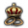
royal marriages with no penalty), and the Emperor is always called into war if a free city is attacked, even if the attacker is in the Empire and has a valid casus belli. However, if a member state attacks free city indirectly by attacking one of its allies then the Emperor will not join and thus the free city can be annexed without Emperor intervention this way, though at the cost of the usual penalties incurred when taking provinces from non-co-belligerents. If the emperor attacks a free city, it will suffer −3 stability.
At the start of the game, the Free Imperial Cities are:
- Aachen
- Bremen
- Dortmund
- Frankfurt
- Goslar
- Hamburg
- Konstanz
- Memmingen
- Nuremberg
- Ulm
- Regensburg
- Rothenburg
As with electors, the empire functions properly with them at their maximum number. The AI will always grant the status of free city to the maximum of 12, as long as there are 12 eligible nations willing to accept.
To offer free city status to a nation, these requirements must be met:
- Has a single
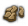
province, with at least 10 total  development. If a free city takes a second province, it loses its status.
development. If a free city takes a second province, it loses its status.
- Must be a member of the Holy Roman Empire.
- Must not be a subject nation, such as a vassal or the junior in a personal union. Free cities can never be vassalized, either diplomatically or in a war resolution. If a free city becomes a vassal in some other way, it remains a free city.
- Must not be an elector.
- Must be at peace.
If a nation qualifies, other factors such as diplomatic reputation, trust, and government type will affect the offer of becoming a free city. In particular, republics are much more willing to become free cities than monarchies or theocracies.
| Reasons
|
Factor
|
| +20 |
Threatened attitude
|
| +10 |
Friendly attitude
|
| +10 |
Ally attitude
|
| +10 |
Loyal attitude
|
| ±3 |
Per point of diplomatic reputation (fractions count, rounded down to nearest whole number)
|
| ±1 |
Per point of opinion of the emperor
|
| −50 |
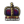 Monarchy
|
| −100 |
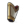 Theocracy
|
| −1000 |
More than one province
|
| −1000 |
Elector of Holy Roman Empire
|
| −1000 |
Hostile attitude or Outraged attitude
|
| −1000 |
Subject of another country
|
| −1000 |
Ruler has a 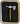 Militarist personality
|
| −1000 |
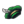 Merchant republic
|
Any free city that loses its status becomes an  Oligarchic Republic. A free city loses its status under any of these conditions:
Oligarchic Republic. A free city loses its status under any of these conditions:
- The Emperor may revoke free city status from a nation at the cost of 5 imperial authority and a −100 opinion malus with that country. The AI will never use this option.
- The free city is no longer a part of the Holy Roman Empire, be it because it left the Empire, the Empire is dismantled, or the Emperor passes the Revoke the Privilegia reform and the city refuses to become a vassal.
- The free city acquires a second province. Free cities may control vassals or colonial nations.
If a free city is annexed and later released (e.g. by the emperor demanding unlawful territory), it will not automatically be a free city again.
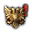
Unlawful territories are provinces that are a part of the HRE, but are owned by a Christian country that does not have a core on them. This applies even if the owner is a member of the HRE.
Liberating territory from a non-HRE member that controls HRE territory will not allow for the emperor to demand it. For example, if Burgundy takes over territory on the eastern HRE front, and the player then reconquers that territory from Burgundy, the player will not get unlawful territory. If the player were to conquer that land before Burgundy it would be considered unlawful.
The HRE emperor may request the owner of unlawful territory to return the province to an HRE member that has a core on it (though this may not be its original owner). Being allied with positive opinion to the emperor makes it less likely that he will demand unlawful territory from a nation. The emperor is also unlikely to demand more than one province from one nation, so taking two provinces and returning one and keeping the other is another option.
Refusing a demand for unlawful territory will reduce relations with all HRE members by '−25 per requested province (this stacks quickly into a nearly impossible negative opinion stack with all HRE members since this modifier has no options to be reduced further than −1 per year – different to regular opinion) and gives the emperor an Imperial Liberation casus belli against the target. The province in question will also receive the following penalties for a duration of 10 years:
The nation holding the unlawful territory 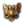
also receives the following penalties for each uncored province:
|
|
−1 |
Yearly prestige
|
|
|
−0.5 |
Yearly legitimacy
|
The Emperor with the support of enough member states may attempt to pass imperial reforms. The sequence of centralization reforms in the game is loosely based on proposals that were made in the historical Holy Roman Empire starting in the 15th century, in order to "reform" it back into the more centralized and efficient structure it was considered to be in the 10th-12th centuries. Such reforms would have shaped it into something more like the conventional nation-states of the rest of Europe. They were usually promoted by smaller members and the Emperor, and opposed by Empire's electors and more powerful members.
To pass a reform, the following conditions must be fulfilled:
- At least 50 imperial authority.[8] More imperial authority increases the support of AI princes.
- At least half the members support the reform
- The emperor is at peace
- The religious leagues are not enabled
By default the player opposes all reforms if they are not emperor. Players can support a reform by using the checkboxes in the imperial interface.
AI Princes (i.e. members) may either support or oppose the Emperor's reforms due to(some of these values are different for decentralization/centralization/common reforms):
| Reason
|
Modifier
|
| Economic power
|
−0.1 per development. This is modified by 0.5x for Decentralization reforms, and if the nation has high development, by 2x for Centralization reforms.
|
| Same government type
|
Monarchies: +2 with other monarchies
|
| Theocracies: −5 with theocracies
|
| Republics: neutral
|
| Opinion
|
+5% of positive opinion of the Emperor (i.e. +10 at +200 opinion)
|
| −50% of negative opinion of the Emperor (i.e. −100 at -200 opinion)
|
| Heretic
|
−20 if the prince's religion is considered heretical by the Emperor
|
| Heathen
|
−50 if the prince's religion is considered to be heathen by the Emperor
|
| Subject of Emperor
|
+25
|
| Overextension
|
−25% of the emperor's current 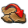 overextension (i.e. −25 at 100%)
|
| Alliance with the Emperor
|
+5
|
| Same dynasty as the Emperor
|
+3
|
| Culture
|
+5 for the same primary culture (only for common and centralization reforms)
|
| −5 for a culture in a different culture group
|
| −10 if the emperor doesn't accept the prince's primary culture (only for centralization reforms)
|
| Imperial Authority
|
+1 for each point of Imperial Authority above 50
|
| Previous reforms passed
|
−2 for each previous reform
|
| Diplomatic Reputation
|
+1 for each point of diplomatic reputation
|
| Weak emperor
|
0 till −20. The value is not shown if it is 0. The current formula is unknown[9]. The value isn't the same for each HRE member. It seems to be related to the autonomy-modified development of the Emperor and the other HRE members. It is worse for centralization reforms than for the common reforms and it seems to be 0 for the decentralization reforms.
|
| Libertas Ecclesiae
|
+15 if the prince is Catholic while the Golden bull “Libertas Ecclesiae” is active.
|
| If a prince is human
|
Human is for: +100.
|
| Human is against: -100.
|
| All other modifiers are negated.
|
List of reforms and their effects[edit | edit source]
Imperial reforms are split into three types, common, centralization, and decentralization. Common reforms, shown in the top row of the HRE interface, can be passed regardless of whether centralization or decentralization reforms have been selected, and must be passed in order to choose one of the two. Centralization and decentralization reforms, meanwhile, are mutually exclusive, unlocked after passing the reform Perpetual Diet, and either unite the HRE into a unified state or empower individual princes. Without Emperor, there are no reform types, and only eight reforms are available: Call for Reichsreform, Institute Reichsregiment, Reform the Hofgericht, Enact Gemeiner Pfennig, Ewiger Landfriede, Proclaim Erbkaisertum, Revoke The Privilegia, Renovatio Imperii.
| Reform
|
Emperor
|
Princes/Empire Provinces
|
Type
|
Required Reform
|
Notes
|
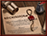 Call for Reichsreform
|
"Imperial Ban" casus belli against non-members with Imperial territory
|
−5% Construction cost in every Empire province
−5% Development cost in every Empire province
|
Common reform
|
None
|
|
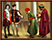 Institute Reichsregiment
|
+1 Diplomats
+1 Diplomatic reputation
|
−2 National unrest in every Empire province
|
Common reform
|
Call for Reichsreform
|
|
 Absolute Reichsstabilität Absolute Reichsstabilität
|
Gives casus-belli on non-members bordering the Empire to force them to join the Empire.
|
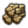 −25% Local state maintenance in every Empire province
|
Common reform
|
Institute Reichsregiment
|
|
| Enact Gemeiner Pfennig
|
+0.5 Yearly tax income per Prince
+1 Diplomatic reputation
|
+1 Diplomatic reputation for every Prince
|
Common reform
|
Absolute Reichsstabilität
|
|
| Perpetual Diet
|
+50% Imperial authority from free cities
|
None
|
Common reform
|
Enact Gemeiner Pfennig
|
A random HRE province that:
- Is owned by Free City
- Is the capital of an Elector and has at least 20 development
- Is a Prince's capital and has at least 30 development
- Is one of the following provinces:
- Regensburg (2957)
- Augsburg (1868)
- Ulm (1872)
The owner of this province gets the province event "Perpetual Diet"
This province gains the triggered province modifier "Perpetual Diet"
|
| Create the Landsknechtswesen
|
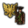 −25% HRE mercenary recruitment cost
|
−25% HRE mercenary recruitment cost
|
Common reform
|
Perpetual Diet
|
|
| Ewiger Landfriede
|
−5% Technology cost
|
−5% Technology cost for every Prince
|
Common reform
|
Create the Landsknechtswesen
|
Princes may not declare war on one another (a non-member Emperor is not affected). Present wars are unaffected, and members may still be called into wars against other members. Co-belligerents, however, will not call their Imperial allies against an Imperial foe.
|
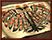 Establish the Reichstag Collegia
|
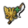 +3 Number of free cities
|
None
|
Decentralization reform
|
Perpetual Diet
|
Mutually exclusive with 'Reform the Hofgericht'
|
| Expand the Gemeiner Pfennig
|
+100 Manpower increase per Prince
|
+200 Manpower increase for Electors per Prince
+10% Local friendly movement speed in every Empire province
|
Decentralization reform
|
Establish the Reichstag Collegia
|
|
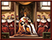 Embrace Rechenschaft Measures
|
+1% Imperial authority growth modifier per Prince
+1 Number of electors
|
None
|
Decentralization reform
|
Expand the Gemeiner Pfennig
|
|
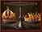 Geteilte Macht
|
None
|
+0.5 Yearly tax income for Electors per Prince
−5% Local development cost in every Empire province
|
Decentralization reform
|
Embrace Rechenschaft Measures
|
|
| Reichskrieg
|
None
|
None
|
Decentralization reform
|
Geteilte Macht
|
Allows the Emperor to create a Casus belli on any non-member nation that borders a member nation, at the cost of 25 imperial authority. The Emperor and Electors will be able to raise War taxes for free while at war with enemies of the Holy Roman Empire.
|
| Reform the Hofgericht
|
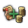 −10% Core-creation cost
|
None
|
Centralization reform
|
Perpetual Diet
|
Mutually exclusive with 'Establish the Reichstag Collegia'
|
| Curtail the Imperial Estates
|
+25% Imperial authority growth modifier
|
None
|
Centralization reform
|
Reform the Hofgericht
|
|
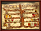 Proclaim Erbkaisertum
|
+25% Imperial authority growth modifier
Will remain Emperor on all further successions
No longer gains +10 Imperial Authority on succession
Subject princes do not use diplomatic relation slots.
|
None
|
Centralization reform
|
Curtail the Imperial Estates
|
There are no more elections for Emperor. Electors no longer vote, though they retain Elector status.
If the empire has no official faith yet, regardless of the faith of the electors, the Peace of Westphalia is declared.
|
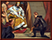 Revoke the Privilegia
|
+25% Imperial authority growth modifier
|
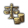 −10% Stability cost modifier
|
Centralization reform
|
Proclaim Erbkaisertum
|
Every prince gets the event ‘Privileges Revoked’ with the following effects:
Princes who support the reform become vassals of the Emperor. Other relations, such as Personal Unions, will be dropped if they conflict with becoming the Emperor's vassal. This will likely cause non-HRE vassals to become disloyal, as total military strength will increase greatly.
Princes who do not support the reform will leave the Empire, receive −100 relations with the Emperor, and the Emperor gains temporary claims on the provinces that were in the Empire. Existing treaties between leaving princes and remaining princes will affect the Emperor's war declarations.
|
| Renovatio Imperii
|
The event "Renovatio Imperii Romanorum" happens
- Gain the "Rome Reborn" country modifier:
- −5% Construction cost
- −5% Construction time
- −2 National unrest
- +50 Yearly tax income
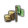 +5% National tax modifier- −10% Stability cost modifier
- +1 Diplomat
- +1% Missionary strength
- +50000 Manpower increase
- +50 Land force limit
- −25% Mercenary recruitment cost
- −25% State maintenance
- +10% Spy network construction
- +3 Yearly prestige
- +1 Possible advisors
- −5% Technology cost
- +1 Tolerance of the true faith
- +3 Diplomatic reputation
- +0.25 Yearly legitimacy
- −10% Core-creation cost
- +1 Leaders without upkeep
- +1 Diplomatic relation
- +10% Institution spread
|
The Empire is effectively dismantled
|
Centralization reform
|
Revoke the Privilegia
|
All princes are inherited by the Emperor
The Holy Roman Empire interface is disabled.
|
The last reform will consolidate all member states of the HRE into a true, unified nation, with the emperor becoming its ruler. This reform is easy to pass, as all the remaining HRE states are now vassals and will usually vote for it. This has a very, very negative impact on relations with former HRE members who left when the player revoked the privilegia - they get a special "Unified the Empire" -100 relation penalty with the emperor. In addition, there will be a lot of 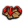
aggressive expansion when trying to conquer their provinces. Note that the cores the emperor gets on imperial territory of non-members will not include those that left as a result of the previous reform, since that reform already removed all of their provinces from the empire.
Even if the player did everything right and made it this far by being nice and defending any and all princes (even the ones who insulted and backstabbed the emperor for centuries), it's likely the player will be somewhat weaker after uniting the empire as although they now have sole command of their armies: the force limit of the united HRE will often be lower than that of the combined HRE "vassal swarm." Beware that when the empire is united, all armies and navies under the command of the HRE Princes are passed on to the unified HRE, which can be devastating to finances due to being over the force limit. The player may need to disband a significant portion of their inherited military units. However, the unified HRE should still emerge vastly stronger than the emperor's original nation and may outnumber the militaries of even a strong Ottoman or France.
If done right, uniting the HRE can be fun and rewarding, and will additionally net the player the "A Kaiser not just in name" achievement if playing on Ironman. If the player has managed to keep imperial territory out of non-imperial hands, expand the empire both in number of provinces and princes, and skillfully navigate the military and diplomatic trials, they may become the dominant nation in Europe or even the world.
In order to dismantle the HRE, it is necessary to be at war against the Emperor, occupy the Emperor's capital yourself, and control all Electors in some way. To control an elector, a country must fulfill one of the following conditions:
- be the overlord of the Elector and they control their own capital (subjects of subjects count as well)
- have an alliance with the Elector and they control their own capital
- have an alliance with the overlord of the Elector and they control their own capital (subjects of subjects of allies count as well)
- occupy the capital of the Elector
- be the overlord of the country which occupies the capital of the elector (subjects of subjects do not count)
- have an alliance with the country which occupies the capital of the elector (subjects of allies do not count)
The tooltip for the Dismantle HRE button in the HRE interface will tell you which Electors are currently not controlled.
In order to dismantle the HRE, it is helpful or even necessary to either ally with or vassalize as many of the Electors as possible. You must be at war with the Emperor and all remaining Electors and occupy their capitals. These can be multiple wars. Note that Electors allied to the war leader still count as controlled even if they are not directly involved in the war. If a third party (including rebels) takes one of the allied/vassalized Elector capital, the elector does no longer count as controlled. Importantly the capital of the Emperor must be controlled by you, so if an ally sieges the emperor's capital down without transferring occupation to you the HRE cannot be dismantled. Simply marking the emperor's capital as territory of interest is not sufficient, try and beeline to the emperor's capital and siege it down yourself.
Dismantling the HRE will remove the HRE interface and all modifiers and effects which the HRE provides or which get triggered by the HRE. The country which dismantles the HRE will get the event “The End of the Holy Roman Empire” which grants prestige, splendor and power projection.
In addition, the HRE will automatically be dismantled if there is nobody eligible to be elected Emperor (see above for requirements) when the current emperor dies. And it will automatically dismantle even if there are other eligible countries if the emperor converts to a non-Christian religion before the reform Erbkaisertum has been passed.
In order to be dismantled the empire must have at least one elector. An empire without electors but with an eligible emperor turns hereditary and can not be dismantled. (The Erbkaisertum reform is not passed by this, however.) This can happen lategame if all member states have converted to non-Catholic religions but the AI did not start the League War, leading to a Catholic emperor without eligible electors.
Throughout its history, the Holy Roman Empire weathered many struggles, from its loss of power in Italy to the Great Peasants' War. In game, these major events are represented as imperial incidents, large events that affect equally large parts of Europe.
- Every member of the HRE can support a certain outcome on an incident, and after one year the outcome is solely decided by the Emperor. However, should the Emperor choose an outcome for an incident that is not popular with most of the HRE it carries strong relationship penalties; a "went against us in the Diet" -25 malus with every prince who voted differently (reducing by +1 each year).
- The Emperor gains 0.2 imperial authority per prince supporting the outcome that was chosen, and 1 imperial authority for every elector supporting that outcome. Meanwhile, the Emperor also loses the 0.2 and 1 imperial authority for every prince and elector supporting the most supported outcome that was not taken.
- Below is a list of all imperial incidents. Unless it fulfils at least one of the criteria below for selecting an outcome, the remaining outcomes are randomly chosen by princes and electors.
| Name
|
Trigger
|
Outcomes
|
Stop conditions
|
| The Burgundian Inheritance
|
Burgundy selected the option 'The [Emperor.Monarch.Dynasty.GetName] Prince will do nicely.' in the event "The Burgundian Succession"
|
Make concessions to France.
- Effects :
- Every province in the France Region that is owned by Burgundy will be ceded to France.
Integrate Burgundy into the Empire.
- Effects :
- Every province in the HRE that is owned by Burgundy will be released as Princes of the HRE.
Keep our union with Burgundy.
|
Burgundy does not exist
|
| The Burgundian Inheritance (Strong ally)
|
Burgundy selected the option '[bur_strongest_ally.GetName] will defend us again.' or 'Let us reintegrate with the French.' in the event "The Burgundian Succession"
|
Demand lowland independence.
- Effects :
- Demand that the Lowlands be released as Princes of the HRE
Press our claim on Burgundy.
Abandon the claims.
- Effects :
- Lose 30 Prestige
- Lose 10 Imperial Authority
|
Burgundy does not exist
|
| The Burgundian Inheritance (Alone)
|
Burgundy selected the option 'Come what may, Burgundy shall remain Burgundian.' or 'The French aren't here to stop us anymore.' in the event "The Burgundian Succession"
|
Demand the low countries.
This isn't worth the effort.
|
Burgundy does not exist
|
| Burgundy and the Empire
|
Burgundy selected the option 'I never much cared for claiming the French Throne.' in the event "Imperial Entrance"
|
Welcome [BUR.Monarch.GetName] of [BUR.GetName] into the Empire.
- Effects :
- AI will always choose this option if it has one of the following attitudes towards Burgundy:
Ban their entry.
- Effects :
- Burgundy gains "Restoration of Union" CBs on all Electors that are
 Monarchies and "Subjugation" CBs on all other Electors for 40 years. Monarchies and "Subjugation" CBs on all other Electors for 40 years.
- AI will always choose this option if:
- it is a neighbor of Burgundy but not allied to Burgundy
- it has one of the following attitudes towards Burgundy:
- Rivalry
- Hostile
- Threatened
- Outraged
- Disloyal
- Rebellious
|
One of the following must be true:
|
| The Teutonic Order and the Empire
|
The Teutonic Order completed the "Seek imperial Protection" Mission and chose the "Better we ask before we become Subjects of the Poles" option.
|
Let the Teutonic Order join the Empire.
- Effects :
- We will accept the Teutonic Order to join without any conditions.
- Neighbors of the Order, which are part of the HRE, might feel threatened by this choice.
- Teutonic Orders Opinion of the Emperor changes by +100
- Every Neighbor of the Teutonic Order that is part of the HRE Opinion of the Emperor changes by -150
Allow the Order to join, but put heavy regulations on them.
- Effects :
- We will accept the Teutonic Order to join the HRE. However, we forbid the Order to attack any other Member of the HRE until they dissolve their Order and reform into the Bishopric or Duchy of Prussia.
- If they decide to attack a member of the Empire, the Teutonic Order will be removed from the HRE and we will see their act of aggresion as an Offensive war against the Empire. (This works not by calling the Emperor as defender, but by declaring a no CB war against the Emperor without the usual stability hit.)
Reject the Request of the Teutonic Order.
- Effects :
- We will reject the Teutonic Order from joining the HRE
- Reduce the Teutonic Orders Opinion of the Emperor and the Emperors opinion of the Teutonic Order by -100
|
One of the following must be true:
|
| The King in Prussia
|
Prussia selected the option 'We shall be Kings' in the event "A Prussian Crown"'
|
Elevate Prussia to an Imperial Kingdom.
- Effects :
- Lose 10 Imperial Authority
- Prussia will become a Kingdom within the HRE through the Sponsorship of the Emperor.
- Prussias Government Rank changes to Kingdom
- Prussia gains 25 Prestige and 25 Legitimacy
- Prussias Opinion of the Emperor and the Emperors Opinion of Prussia change by +100
- AI will always choose this option if it has one of the following attitudes towards Prussia:
Let [PRU.Monarch.GetHerHim] call [PRU.Monarch.GetHerselfHimself] the King in Prussia
- Effects :
- Prussia will become a Kingdom within the HRE through a legal compromise tolerated by the Emperor
- Prussias Opinion of the Emperor changes by +50
- AI will always choose this option if it has a Neutral attitude towards Prussia
We will not recognize this self-appointed monarch.
- Effects :
- Prussia must choose between their false crown and their status as an Imperial Prince
- Prussias Opinion of the Emperor changes by -100
- AI will always choose this option if it has one of the following attitudes towards Prussia:
- Rivalry
- Hostile
- Threatened
- Outraged
- Disloyal
- Rebellious
|
One of the following must be true:
|
| Petition for Membership
|
A Prince selected the option 'We shall take this to the Imperial Diet.' in the event "Petition for Membership"'
|
[current_pu_incident_target.GetName] shall join the Empire.
- Effects :
- The Princes opinion of the Emperor changes by +50
- AI will always choose this option if one of its subject nations has the country flag current_pu_incident_target_flag
We do not accept this application.
- Effects :
- The Princes opinion of the Emperor changes by -50
|
One of the following must be true:
- No country has the country flag current_pu_incident_target_flag
- Any country that has the country flag current_pu_incident_target_flag:
- One of the following must be true:
- Is not a subject nation
- This country's overlord is not a member of the HRE
|
| The Fate of the Peasantry
|
The event "The Great Peasants' War" has happened
|
Crush the remaining agitators.
- Effects :
- Members of the Empire gain the "Crush the Peasantry" CB for the rest of the game
- The
 Nobility of every HRE Nation will gain +10% Nobility of every HRE Nation will gain +10% Loyalty and +10% Loyalty and +10% Influence for the rest of the game Influence for the rest of the game
- AI is 10 times more likely to choose this option if Nobility influence is at least 60
Grant concessions to the peasantry.
- Effects :
- The Nobility of every HRE Nation will gain -5% Loyalty and -5% Influence for the rest of the game
- All members of the HRE that arent Peasants Republics gain -5% National Tax modifier
- AI :
- AI is 10 times more likely to choose this option if one of the following is true:
- Nobility influence is less than 40
- it is Reformed
- AI is 1000 times more likely to choose this option if it has enacted Peasants Republic
|
None
|
| Decline of the Hanseatic League
|
 Lübeck selected the option 'Ask the Emperor for help.' in the event "Decline of the Hanseatic League" Lübeck selected the option 'Ask the Emperor for help.' in the event "Decline of the Hanseatic League"
|
We have no obligations to the Hansa.
- Effects :
- All Nations that are part of the
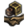 Hanseatic Trade League will have their Opinion of the Emperor changed by -50
- AI will always choose this option if it has one of the following attitudes towards Lübeck:
- Rivalry
- Hostile
- Threatened
- Outraged
- Disloyal
- Rebellious
Organize the Free Cities to help.
- Effects :
- Every Free City will be asked to join the Hanseatic Trade League
- All Nations that are part of the Hanseatic Trade League will have their Opinion of the Emperor changed by +100
- AI will always choose this option if it has one of the following attitudes towards Lübeck:
Declare an embargo against [lubeck_trade_power.GetName].
- Effects :
- The Nation that triggered this Incident (usually Denmark) will gain "Imperial Embargo" in the "Lübeck", "Rhineland" and "Saxony" nodes, reducing their Trade Power by -30
- The Nation that triggered this Incident (usually Denmark) will get the Event "Embargoed by the Empire"
- All Nations that are part of the Hanseatic Trade League will have their Opinion of the Emperor changed by +150
- AI will always choose this option if the strongest trade power in the Lübeck trade node has one of the following attitudes towards it:
- Rivalry
- Hostile
- Threatened
- Outraged
- Disloyal
- Rebellious
|
One of the following must be true:
- Lübeck does not exist
- Lübeck is not a member of the HRE
- Lübeck has not enacted Oligarchy
|
| The Pope and the Emperor
|
The Papal States selected the option 'We will join the Empire.' in the event "A Holy Empire?"
|
The Pope will join the Empire
- Effects :
- The Papal States will become part of the HRE
- The Papal States opinion of the Emperor changes by +50
- The Papal States will become an elector if the HRE does not have the maximum amount of electors
- This will have Ramifications for the entire Catholic world.
- Catholic nations outside the HRE will receive Prestige penalties.
- AI will always choose this option if it has one of the following attitudes towards the Papal States:
The Holy See should remain independent.
- Effects :
- Catholicism gains 5% Reform Desire
- AI :
- AI is 50 times more likely to choose this option if one of the following is true:
- AI will always choose this option if it has one of the following attitudes towards the Papal States:
- Rivalry
- Hostile
- Threatened
- Outraged
- Disloyal
- Rebellious
|
One of the following must be true:
|
| The Question of Holstein
|
The Emperor of the HRE selected the option 'This matter requires deliberation.' in the event "The Question of Holstein"
|
Demand the restoration of Holstein.
- Effects :
- The owner of the Holstein provinces opinion of the Emperor changes by -50
- The Emperor demands the restoration of Holstein to the HRE
- AI will always choose this option if it has one of the following attitudes towards the owner of Holstein (1775):
- Rivalry
- Hostile
- Threatened
- Outraged
- Disloyal
- Rebellious
Relinquish the Imperial claim.
- Effects :
- The owner of the Holstein provinces opinion of the Emperor changes by +50
- Lose 10 Imperial Authority
- Holstein will no longer be part of the HRE
- AI will always choose this option if it has one of the following attitudes towards the owner of Holstein (1775):
|
One of the following must be true:
- Holstein exists
- The owner of Holstein (1775) is a member of the HRE
|
| The Shadow Kingdom
|
The Emperor of the HRE selected the option 'The Emperor must decide. Summon the diet!' in the event "The Shadow Kingdom"
|
It is time to abandon Italy.
- Effects :
- Lose 10 Prestige
- Lose 20 Imperial Authority
- Italian Nations that have been reigned in will not leave the Empire
- Italian Nations that have not been reigned in will leave the Empire
- The Emperor will lose 0.2 Imperial Authority per Province development that leaves the HRE
- All Italian Provinces that are part of the HRE that are owned by non HRE members will be removed from the HRE
- AI :
- AI is twice as likely to choose this option by default
- AI is five times more likely to choose this option if its capital is in the Italy region
We must rein in the Italians.
- Effects :
- The Emperor has until 1490 to rein in as many Italian Nations in the HRE as possible.
|
None
|
| Switzerland and the Empire
|
Switzerland selected the option 'We no longer need the Empire.' in the event "Switzerland and the Empire"
|
Grant them permission to leave.
- Effects :
- Lose 10 Imperial Authority
- The Empire will renounce their claim on swiss territory
- AI will always choose this option if it has one of the following attitudes towards Switzerland:
Membership is not optional.
- Effects :
- Emperor declares war on Switzerland with Imperial Reconquest CB.
- AI will always choose this option if it has one of the following attitudes towards Switzerland:
- Rivalry
- Hostile
- Threatened
- Outraged
- Disloyal
- Rebellious
|
One of the following must be true:
- Switzerland does not exist
- Switzerland is the Emperor of the HRE
- Switzerland is a subject nation
- Switzerland is a member of the HRE
- Switzerland is at war with the Emperor of the HRE
- Switzerland is in a defensive war together with the Emperor
- Switzerland is in an offensive war together with the Emperor
|
| The Dutch Rebellion
|
The disaster Dutch Revolt is happening
|
We will support the Dutch.
- Effects :
- The Emperor gains a Alliance with Netherlands
 Netherlands opinion of the Emperor changes by +100 Netherlands opinion of the Emperor changes by +100
- AI will always choose this option if it has one of the following attitudes towards the Netherlands:
We should not intervene.
- Effects :
- Lose 10 Prestige
- If the Netherlands emerge from the war in a position of strength, they will leave the HRE.
- AI will always choose this option if it has a Neutral attitude towards the Netherlands
They are rightful subjects of [dutch_revolt_country.GetName].
- Effects :
- Emperor allies the Overlord of the Netherlands
- Netherlands opinion of the Emperor changes by -100
- If the Netherlands emerge from the war in a position of strength, they will leave the HRE.
- AI will always choose this option if it has one of the following attitudes towards the Netherlands:
- Rivalry
- Hostile
- Threatened
- Outraged
- Disloyal
- Rebellious
|
One of the following must be true:
- Netherlands does not exist
- The Netherlands is at peace
- The Netherlands is at war with the Emperor of the HRE
|
| Hungary Wishes to Join the Empire
|
Hungary selected the option 'Hungary belongs in the Empire.' in the event "Membership in the Empire"
|
Hungary's membership would strengthen the Empire.
- Effects :
- Bohemia loses their Electorate
- Hungary becomes a Elector
- Bohemia's Opinion of the Emperor changes by -100
- Hungary's Opinion of the Emperor changes by +100
- AI will always choose this option if it has one of the following attitudes towards Hungary:
Hungary's membership would damage the Empire.
- Effects :
- Hungarys Opinion of the Emperor changes by -100
- AI will always choose this option if it has one of the following attitudes towards Hungary:
- Rivalry
- Hostile
- Threatened
- Outraged
- Disloyal
- Rebellious
|
No country has the country flag hungary_incident_flag
|
| The Reformers Protest
|
Depending on how much of the HRE is owned by Reformed countries when the event "The Evangelical Union is Victorious" happens, the following can happen :
- If Reformed Countries own at least 80% as many HRE provinces as Non-Reformed Countries, the Incident can happen.
- If Reformed Countries own at least 100% as many HRE provinces as Non-Reformed Countries (so if at least half of the HRE is owned by reformed countries), the flag <incident_reformer_dissension_high_chance> gets set which decreases the chance for the emperor to pick the option "The Empire is and will remain Protestant!" and the chance for reformed members to stay in the empire if the emperor does pick that option.
|
The Empire is and will remain Protestant!
- Effects :
- Reformed Princes will be outraged and might quit the Empire
- AI is 50 times more likely to choose this option if it is Protestant
Grant them equal rights.
- Effects :
- The HRE will sign a Treaty of Religious Peace
- Lose 20 Imperial Authority
- AI is 50 times more likely to choose this option if one of the following is true:
- it has enabled humanist ideas
- it is Catholic
We must concede to all demands.
- Effects :
- Reformed becomes the official Faith of the HRE.
- AI :
- An Emperor that is reduced to 1 Province or with less than -50 warscore against a Reformed enemy will pick this option.
- AI is 100 times more likely to choose this option if it is Reformed
- AI will never choose this option if it is not Reformed
|
None
|
| The Hussite Protest
|
Depending on how much of the HRE is owned by Hussite countries when the event "The Evangelical Union is Victorious" happens, the following can happen :
- If Hussite Countries own at least 80% as many HRE provinces as Non-Hussite Countries, the Incident can happen.
- If Hussite Countries own at least 100% as many HRE provinces as Non-Hussite Countries (so if at least half of the HRE is owned by hussite countries), the flag <incident_hussite_protest_high_chance> gets set which decreases the chance for the emperor to pick the option "The Empire is and will remain Protestant!" and the chance for hussite members to stay in the empire if the emperor does pick that option.
|
The Empire is and will remain Protestant!
- Effects :
- Hussite Princes will be outraged and might quit the Empire
- AI is 50 times more likely to choose this option if it is Protestant
Grant them equal rights.
- Effects :
- The HRE will sign a Treaty of Religious Peace
- Lose 20 Imperial Authority
- AI is 50 times more likely to choose this option if one of the following is true:
- it has enabled humanist ideas
- it is Catholic
- it is Reformed
We must concede to all demands.
- Effects :
- Hussite becomes the official Faith of the HRE.
- AI :
- An Emperor that is reduced to 1 Province or with less than -50 warscore against a Hussite enemy will pick this option.
- AI is 100 times more likely to choose this option if it is Hussite
- AI will never choose this option if it is not Hussite
|
None
|
HRE interface while it's "in a state of religious war", with the league leaders and members on each side.
At the start of the game in 1444, a ruler can only be elected Emperor if they follow the dominant religion - Catholic. However, Electors can be of any Christian religion. After 1550, if the Counter-Reformation has begun, one of the Electors (that is not a subject nation) has become Protestant, Reformed, Anglican, or Hussite, and the Empire hasn't been reformed to the point of becoming hereditary, then the religious leagues can be formed by the event The Evangelical Union. Any European nation [hence, having its Capital on the European continent, e.g. Ottomans] may join either league, regardless of religion, including states outside the Empire, and even if they have a truce with the Emperor. The Catholic League will begin with the current Emperor at the head, any subsequently elected emperor will automatically assume leadership of the Catholic league, even if they had previously been neutral or part of the Protestant League. The Protestant League is headed by the first Protestant country which joins, thereafter the leader is determined based on a military score determined by the nation's maximum manpower, force limit, and tactics. Being at war reduces a country's military score by 80%, while being an elector boosts this score. Only Protestant countries are eligible to be league leader, this excludes other denominations entirely (e.g. Reformed, Anglican, Hussite).
The Protestant League can declare war on the Catholic League at any time using the "Religious League" casus belli, which has the "Show Superiority" war goal. If a league leader is attacked by any nation while the league is active, their fellow league members will automatically join the war as defenders of the leader. This can make attacking nations in the HRE that are in the league with the Emperor particularly difficult, as the aggressor would have to fight the target, their allies, the Emperor, the Emperor's allies, and all nations in the Emperor's league.
If a member of the Protestant or the Catholic League is at war with the Emperor when the league war is declared, they are not called into the league war and their own war against the Emperor continues as normal.
Joining a league war grants the "Joined League War" country modifier for 100 years from the start of the war, which gives the following benefits:
- +0.5 Yearly army tradition
- −5% Military technology cost
If a league wins the war by enforcing the "Religious Supremacy" peace term for 50% war score, that league will have their religion made the permanent official religion of the Holy Roman Empire. This disables further league wars and means that only countries of this religion can become electors or emperors. Furthermore, all countries with their capitals in Europe, even if outside the Empire, will gain the following benefits if they follow the victorious religion:
- +0.25 Yearly legitimacy
- +1 Tolerance of the true faith
- +1% Missionary strength
- +25% Imperial authority
If the Protestant League enforces "Religious Supremacy", but the HRE is predominantly Reformed, the Imperial Incident The Reformers Protest will happen, which can make Reformed the official faith. If Hussite is the dominant faith the Imperial Incident The Hussite Protest will happen, which can make Hussite the official faith. If Anglican is at least a significant minority (Anglican countries own at least 30% as many HRE provinces as non-Anglican countries) then the event Anglicanism in the Holy Roman Empire can happen, which will make Anglican the official faith without an Imperial Incident.
If any league war lasts a long time (25 years), or if it ends in a peace that does not involve either side securing the "Religious Supremacy" peace term, the Peace of Westphalia is signed, ending the religious war and allowing any Christian to be elected emperor. This is the only way for an Orthodox or Coptic ruler to become emperor and the second of the two ways for a Hussite or Reformed ruler to become Emperor. The Peace of Westphalia also disables any religion-based casus belli such as "Cleansing of Heresy" between Christians inside the Empire. Emperors will no longer gain or lose imperial authority for princes converting after the Peace of Westphalia is signed, also the monthly imperial authority loss for heretic princes is halved.
If the religious leagues are not triggered in the HRE before 1625 or if the leagues form, but the war is not declared for 30 years, the event The Diet of $CAPITAL_CITY$ can happen for the emperor and declare Catholicism the official faith of the empire. This event ends the leagues if they had formed. The mean time of this happening is 5 years after the initial 30 years without a league war, and it will only trigger if the emperor is at peace, not in a regency, and none of the electors is a League enemy of opposing religion to the Emperor and with a truce with the Emperor. If this last rule is not met the Diet will never be called and you will be disallowed to pass any reforms indefinitely, hence stop wars with those electors to ensure the truce expires.
Conquering provinces in the HRE[edit | edit source]
Conquering provinces in the HRE and from HRE members presents four potential additional hurdles: a 50% penalty to fabricating claims, the Emperor being called into the war, the provinces being demanded back as "unlawful territory", and 50% increased aggressive expansion when taking HRE provinces.
Emperor being called in wars against HRE members[edit | edit source]
The emperor will receive a call to war as a co-belligerent if you attack a Free City, attack a member as a non-member, or attack a member with no casus belli.
How to handle:
- Declare war on a non-HRE ally of the HRE member you want to conquer and don't name the HRE member as a co-belligerent
- Use Enforce Peace, Proclaim Guarantee or possibly Great Power intervention to join a war involving an HRE member
- Get yourself or an ally attacked by an HRE member
- Vassalize diplomatically instead (difficult, as members get negative reasons to accept vassalization)
- Join the HRE
- Attack while the Emperor can't accept a call to arms (e.g. is already at war with the target)
- Attack when the Emperor is unlikely to heed the call to arms (depleted army and manpower, in other wars, you being strong, emperor's rival)
- Be stronger than the Emperor and just fight him (or possibly have him decline the call the arms because he's afraid of you)
- Become the Emperor
- Dismantle the HRE
Note that having an alliance with the Emperor does not help, as they may still join on the defender's side.
Emperor demanding back non-cored HRE provinces[edit | edit source]
Whether you are a member of the HRE or not, if you are Christian the Emperor will demand back non-core provinces in the HRE you conquer.
How to handle:
- Vassalize militarily or diplomatically instead
- Have an alliance and good relations with the Emperor (ideally at +100 improvement)
- Decline and take the penalties and Imperial Liberation casus belli
- Take and core the province when the Emperor is at war. While the Emperor can demand unlawful territory while he is at war (not with you), AI-controlled Emperors don't seem to do so
- Take and core the province while the Emperor has a long truce with you. The Imperial Liberation CB expires in 10 years.
- Become the Emperor
- Start as a non-Christian country, or convert to a non-Christian religion
- Dismantle the HRE
General reforms:
- If “Call for Reichsreform” has been passed, the emperor will have an 'Imperial Liberation' casus belli on non-members holding imperial provinces.
- If “Absolute Reichsstabilität” has been passed (only with
 Emperor), the emperor will have an 'Expand Empire' casus belli on bordering non-members to force them to join the empire.
Emperor), the emperor will have an 'Expand Empire' casus belli on bordering non-members to force them to join the empire.
- If “Ewiger Landfriede” has been passed, princes can't declare war on each other.
Decentralization reforms (only with Emperor):
- If “Geteilte Macht” has been passed, the emperor's conquests outside the empire no longer generate aggressive expansion for princes.
- If “Reichskrieg” has been passed, the emperor can spend imperial authority to create an 'Imperial Realm War' casus belli on non-members, which calls in all members as allies of the emperor and can force the target to join.
Centralization reforms:
- “Revoke the Privilegia” and “Renovatio Imperii” cause would-be conquerors to be at war with the whole empire.
Notes and strategies for specific reforms[edit | edit source]
It is still possible for princes to end up at war as a result of honoring alliances with non-members or intervening in succession wars.
When playing as the Emperor, in order to get as many princes as possible as vassals, it is worth increasing Imperial Authority to a level where all or most members would vote yes for this reform. Try distributing gifts, royal marriages, alliances and other relation-improving maneuvers to members who oppose it, before implementing the reform. Once passed, if a new vassal is engaged in war, as the vassal overlord the emperor will take control, but be aware that this includes wars with belligerents both outside and inside the Empire, which may mean that instead of becoming overlord of a HRE province the player declare war on it, even if it agreed to the reform. Ewiger Landfriede means this should not happen too often, but it's something to be aware of.
Due to the previous reform Proclaim Erbkaisertum, the vassal relationships gained as a result of this decision do not count towards diplomatic upkeep. If the Emperor releases a vassal within HRE territory as an Imperial Prince, the newly released vassal will not count towards diplomatic upkeep either. A nation liberated after this reform, however, will not automatically become the Emperor's vassal. Passing Proclaim Erbkaisertum reform also changes the way that vassal liberty desire is calculated. Before the reform, each vassal's liberty desire reflects the combined strength of all vassals, in or out the HRE. After the reform, an HRE vassal's liberty desire no longer take into account his strength or those of the other vassals. Beware, however, that non-HRE vassal will still take into account the strength of HRE vassals (as that of other vassals), which can lead to a sudden rise in non-HRE vassal's liberty desire when the reform is passed.
Revoke the Privilegia is where the HRE will be the strongest, as any country that the emperor declares war on will have a large swarm of vassals to fight through. If the Empire is strong enough, they can usually take most (if not all) large Eurasian nations, even without any allies (providing the vassal swarm is large enough). A common strategy when playing as Austria and having revoked the privilegia is to rotate between targets. Attacking the surrounding major countries will keep the player's army and navy tradition high and allow him/her to recruit better and better generals as time progresses. When playing as an expansionist Austria (which is recommended most of the time), it is prudent to feed captured land to vassals to make them even stronger, giving eastern land to, for example, Pomerania, Brandenburg, and Bohemia and western land (France, Spain/Castile, and maybe even Northern Africa) to the small vassals in the western part of the Empire, and taking the Ottomans, the Black Sea, and nearby steppes for the player or giving it to other members.
Consider designating your HRE vassals as marches if you don't need their territory and have a strong economy, as it will lower their liberty desire (so you can feed them even more), and strengthen their military abilities, making the swarm even more unstoppable.
The Holy Roman Empire was the dominant political power in Central Europe during this historical period. Compared to earlier centuries, when the Emperor wielded more control over his territory, the Empire by the EU4 timeframe had become greatly decentralized, and its member states acted with great autonomy. The power of the Emperor was still considerable. He had the power to intercede in the wars and affairs of the member states of the Empire. If the Emperor can enact the reforms, he can eventually centralize all the separate nations of the Empire under his own banner, and turn the Holy Roman Empire into a unified powerhouse which in the right hands can be almost unstoppable. Alternatively, the Empire can embrace its growing decentralization and gain strength from its diversity, while remaining united when it needs to. Conversely, the Empire can wane in power, and, as happened historically in 1806, it can eventually be dismantled. In game, however, the Holy Roman Empire usually passes a moderate number of reforms. What happens largely is the elimination of most one province minor states and leads to an end game scenario of 8-18 mid-sized states instead of the original 50.
Form the Holy Roman Empire.
Form Scandinavia and revoke the privilegia of the Holy Roman Empire while being the Emperor.
Become an elector in the HRE as a country which does not start as elector.

Starting as Mulhouse, become Emperor of the HRE and completely decentralize the Empire.
As either the Papal States or the Emperor, have the Papal States as an Elector while the HRE is officially Catholic.
Have 7 Free Cities in the Empire, none of which is of a Germanic culture.
Become the Emperor of the Holy Roman Empire as Spain.

Overthrow Austria and become the Emperor of the Holy Roman Empire.

Have at least 100 countries in the HRE.
- ↑ These reforms have is_eligible_for_hre_emperor = no in their effects. States General, Stadhouder Monarchy and Livonian States General only have this effect if the Res Publica DLC is active.
- ↑ See in /Europa Universalis IV/common/static_modifiers/00_static_modifiers.txt (Static modifiers#Emperor).
- ↑ See in /Europa Universalis IV/common/static_modifiers/00_static_modifiers.txt (Static modifiers#States in the Holy Roman Empire).
- ↑ See in /Europa Universalis IV/common/static_modifiers/00_static_modifiers.txt (Static modifiers#Free Cities in the Holy Roman Empire).
- ↑ Includes re-elections triggered by the Emperor's abdication, "manually" or due to pretenders enforcing their demands.
- ↑ 6.0 6.1 This number is calculated as IMPERIAL_AUTHORITY_FROM_PRINCES / HRE_PRINCE_AUTHORITY_THRESHOLD. These values can be found in /Europa Universalis IV/common/defines.lua.
- ↑ Only vassal-type subjects count towards this penalty. Personal union subjects don't count.
- ↑ See in /Europa Universalis IV/common/defines.lua.
- ↑ Before patch 1.34, the formula was: −2 for each point of total development of the Emperor's provinces less than 100, taking local autonomy into account